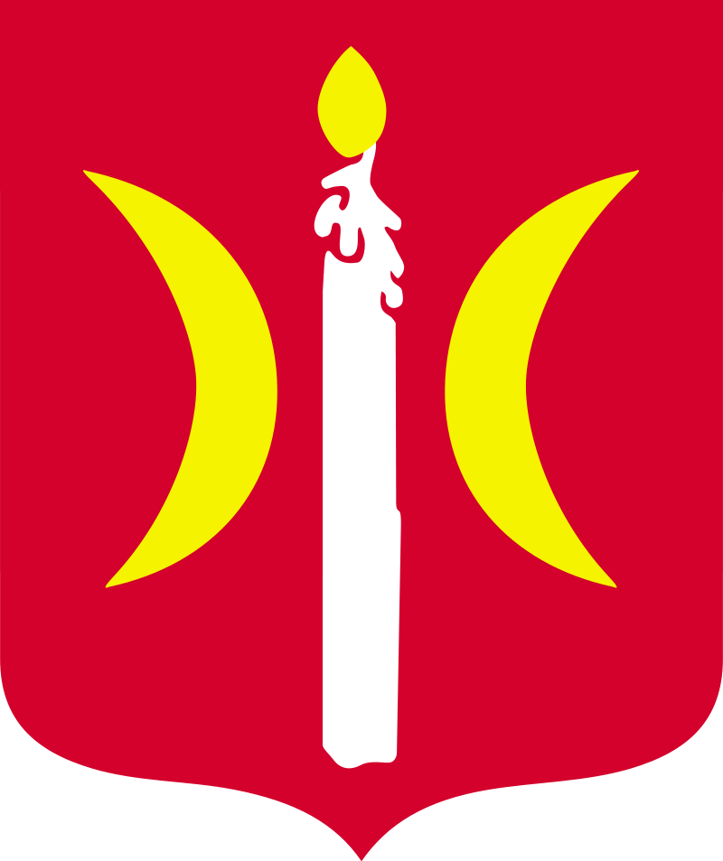

O Œwieciu
Œwiecie (niem. Schwetz, kasz. Swiéce) – miasto w Polsce po³o¿one w woj. kujawsko-pomorskim, w powiecie œwieckim, siedziba gminy miejsko-wiejskiej Œwiecie.
Wed³ug danych z 1 stycznia 2018 Œwiecie liczy³o 25 924 mieszkañców.
Œwiecie uzyska³o lokacjê miejsk¹ w 1338 roku.
